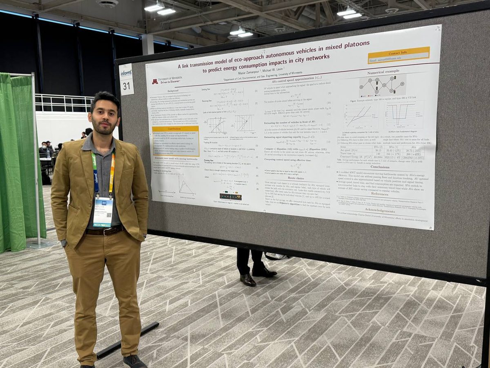
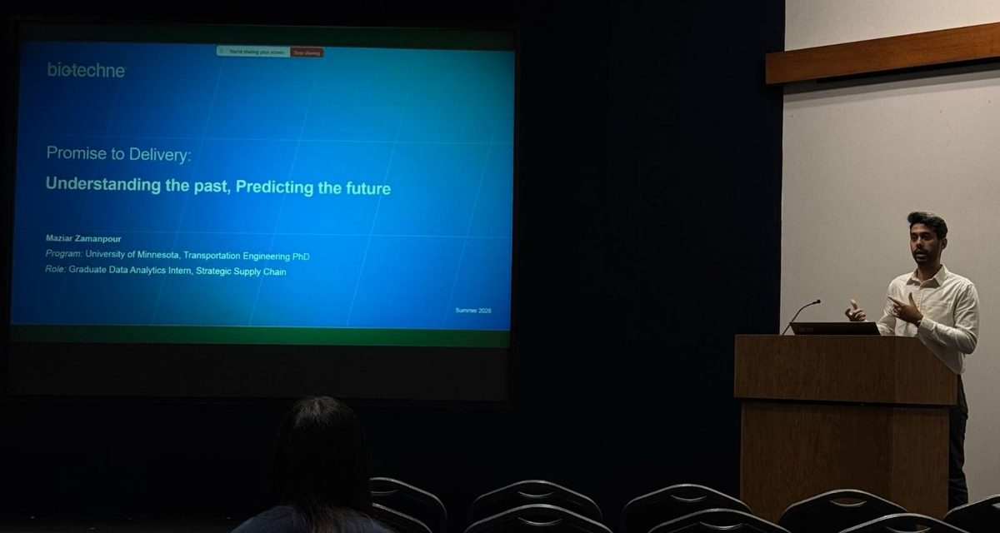
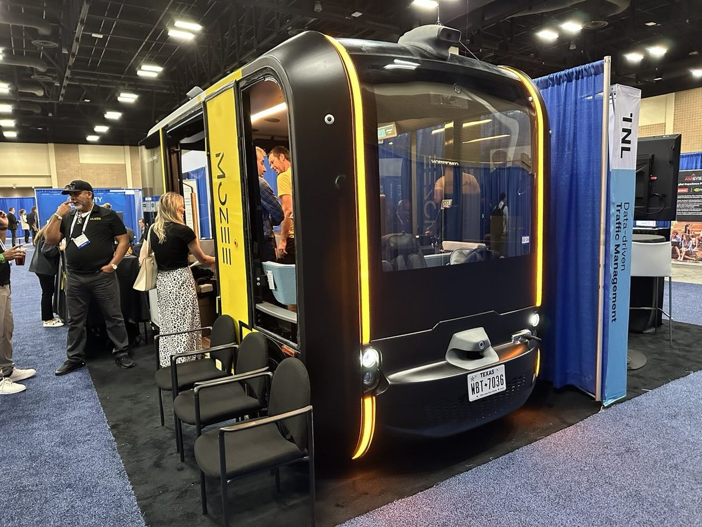

Operations Research · Data Science · Supply Chain Analytics
I turn messy operations into decisions people act on.
I build optimization and predictive models that leave the notebook and get used. My work ranges from a connected-vehicle warning system tested on Minnesota public roads to on-time-delivery analytics that supply chain leaders at Bio-Techne use to plan.
How I work
A technical person who reads the business first.
I'm in a Ph.D. program, but I don't treat problems as academic exercises. Wherever I work, I learn how the operation runs and where it loses money before I pick a method. Then I take on the problems that don't have a clean answer. Teams come to me when something is stuck.
Learn the business first
Before I write a query or a model, I work out which decision the analysis should change and what a bad outcome costs. At Bio-Techne, I traced how an order moves from promise date through planning, production, QC and shipping before attributing a single late order to anyone.
Own the messy problem
I take the problems nobody owns and the data nobody trusts. I've rebuilt historical inventory that the ERP never stored, found and fixed systemic data-quality gaps, and turned "why are we late?" into delay attribution you can measure.
Ship tools, not slides
I count my work as done when someone is using it. So far that has meant a warning system that everyday drivers used in live traffic, planning tools used by planners and supply chain directors, and a cost–benefit case that fed into MnDOT's deployment decisions.
Explore
Three sides of my work
The same toolkit of optimization, prediction and systems thinking, applied in academia, industry and a startup.

Ph.D. Research
Optimization and control for connected vehicles
Model predictive control, driver-behavior learning and network models. Field-tested, published and recognized with awards.
See research →
Industry · Bio-Techne
Promise to delivery: supply chain data science
Root-causing on-time delivery misses in large, messy ERP data, and predicting the next ones before they happen.
See industry work →
Entrepreneurship · NSF I-Corps
MobiliSlice: testing a car-sharing idea against the market
Dispatch optimization, demand forecasting, and 100+ interviews to find out whether anyone would pay.
See the venture →Toolkit
What I work with
Optimization
- Mixed-integer programming
- Gurobi
- CPLEX
- PuLP
- Model predictive control
- Dynamic programming
- Heuristics
Machine learning & statistics
- Forecasting (ETS, gradient boosting)
- Regression
- Classification
- Anomaly detection
- Bayesian methods
- scikit-learn
Data & BI
- SQL (T-SQL)
- SQL Server
- Databricks
- Power BI & DAX
- SAP ERP/MRP
- Power Automate
- Excel
Programming & simulation
- Python (NumPy, pandas)
- R
- Java
- Git/GitHub
- SUMO
- VISSIM
Looking for an OR or data science hire?
I'm looking for full-time roles in operations research, data science and supply chain analytics, starting early 2027.